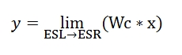

This mass detector uses the Mexican Hat wavelet, that is a continuous wavelet transform
(CMT). The search of mass spectrum peaks is executed in three steps. First converts the
original intensity of data points into wavelet domain. Next look for all local maximums
in the calculated wavelet. And finally sets a mass spectrum peak in the same point where
the wavelet has a local maximum.
The mass spectrum peak is formed with the selected data point (mass and intensity) using
the wavelet and all surrounding data points. These weightings determine the relative importance
of each data point mass on the average. The data points used in the calculation of
exact mass are considered part of the mass spectrum peak.
This mass detector is recommended for raw data with low resolution.
In mathematics and numerical analysis, the Mexican hat wavelet is the normalized second derivative of a Gaussian function.
|
|
The parameter t is the intensity of each data point in the curve,
and sigma corresponds to the standard deviation.

|

|
To make easier the process of wavelet calculation the original function is turned into two parts, where Wc is the wavelet coeefient and y is the intensity of the wavelet on certain point. In the first formula "t" is the "Wavelet window size(%)" parameter.

|
|  |
The limits where is evaluated the Mexican Hat wavelet are from -5 until 5 (ESL,ESR) and the incremental step used in this range is result of divide the range from ESL until ESR by 60000. The number of coeffients used to calculated the wavelet intensity depends on the "Scale level" parameter.
This detector requires the next three parameters:
"Noise level"
This value sets the minimum intensity level that a data point must
have to be consider part of a possible peak.
"Scale level"
This value is the scale factor that either dilates or compresses the wavelet signal.
When the scale factor is relatively low, the signal is more contracted which in turn
results in a more detailed resulting graph and as a consequence more noisy peaks are detected.
On the other hand, when the scale factor is high, the signal is stretched out which means that
the resulting graph will be presented in less detail resulting in a smoothed signal.
"Wavelet window size(%)"
This value is the size of the window used to calculated the wavelet signal.
When the size of the window is small makes more noisy peaks could be detected.
On the other hand, when the size of the window is complete is possible to avoid the undesired
peaks, depending on the raw data to process this parameter is manipulated by the user.
Wavelet window size at 10%
|
Wavelet window size at 100%
|
Parameter setup dialog
|
Spectrum plot showing detected peaks
|